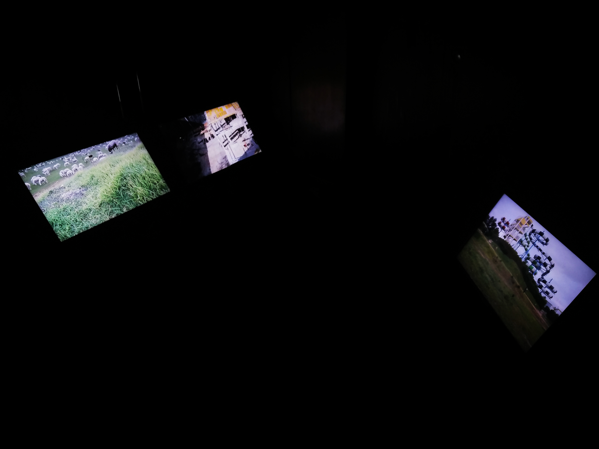

Untitled (follow me back)
2019
Vídeo HD, cor, 07’45’’, loop
Sinopse:
A performer procura uma ovelha por 180km. Após encontrá-la, mantém-na ao colo, circulando continuadamente, projetando um hipotético trajeto que a própria ovelha pudesse fazer.
HD video, color, 07'45'', loop
Synopsis:
The performer looks for a sheep for 180 kms. After finding it, she keeps it on her lap, circulating continously, projecting a hipotetical path the sheep could have taken.



As três peças - I want to see but there is something in (front of) my eyes, Untitled (follow me back), Untitled - são apresentadas enquanto instalação, dispostas em três ecrãs, que se aglomeram e se correlacionam num espaço comum, onde o espetador opta por escolher o que vê e o que acaba por não ver. Os três vídeos disponibilizam-se em repetição (loop), numa sala iluminada apenas pela luz dos ecrãs e preenchida pelo som proveniente do vídeo I want to see but there is something in (front of) my eyes.
⤹